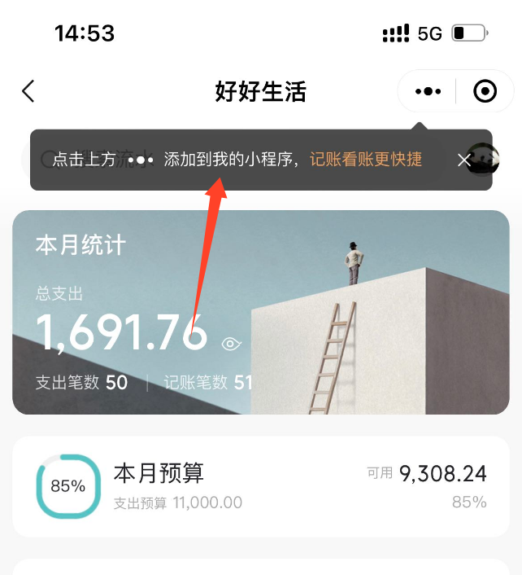

I 添加我的小程序提示引导优化

当前，引导添加到我的小程序的提示信息已出现过的状态是存在微信缓存里的，而缓存被清理后，尽管用户已经完成了添加动作，依旧会再次弹出，影响体验。故考虑增加弹出限制
需求背景
需求说明
1、服务端需要记录该用户已经展示过提示和展示时间
2、前台该引导提示弹出规则：
1）优先判断小程序微信缓存：已弹出过不再弹出；
2）无缓存时，查询服务端记录该用户是否已经展示过，距离上次展示超过30天，才再次展示该提示